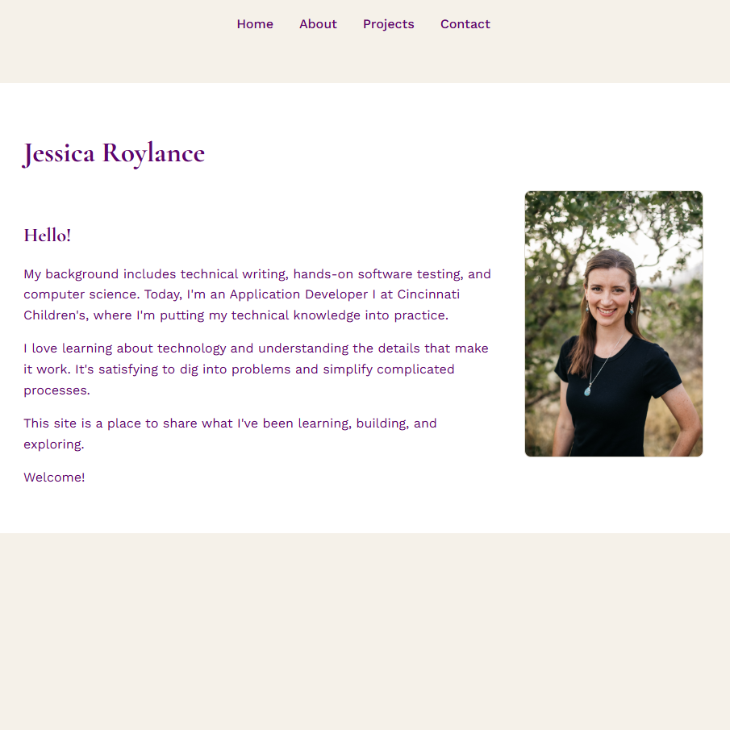
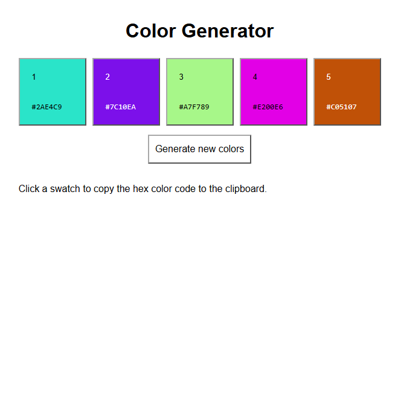
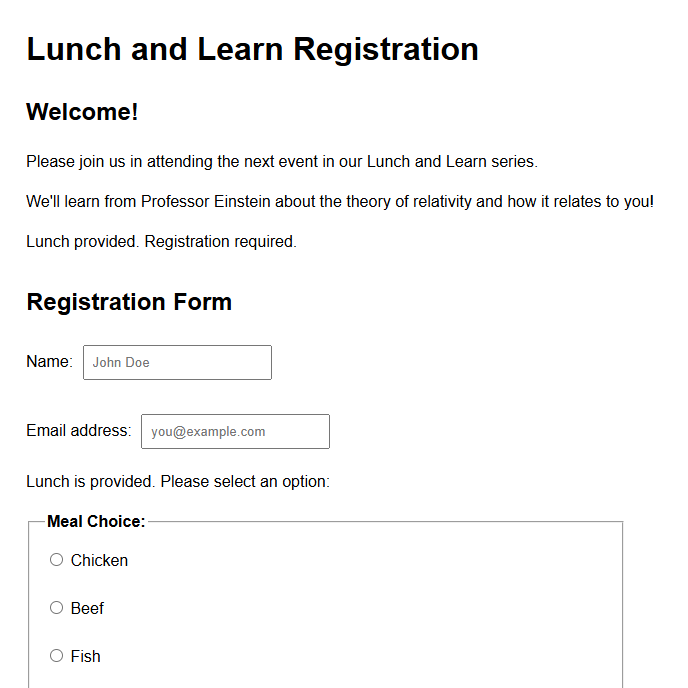
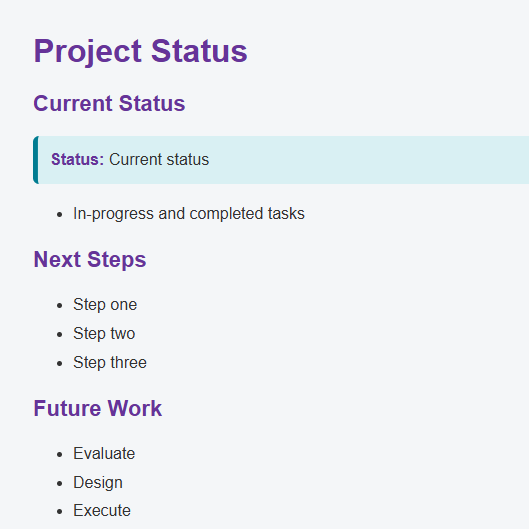

Jessica Roylance
Projects
Practice projects to brush up on concepts and learn new skills.

Personal Portfolio Website
November 5, 2026
An HTML and CSS project featuring four pages, top navigation, organized content, project screenshots, and interactive links.

Color Generator
November 4, 2026
An HTML, CSS, and JavaScript project that generates five random colors and displays their hex codes. Users can generate new colors or click a swatch to copy its hex code. Text color automatically switches between black and white for better contrast.

Registration Form
November 2, 2026
A registration form using HTML, CSS, and JavaScript with text fields, meal selection, and dietary restriction checkboxes. Users can select multiple restrictions, and choosing "None" clears the other selections. Note the data isn’t stored.

Project Status
October 30, 2026
A simple HTML and CSS project that organizes status updates using structured text and styling.